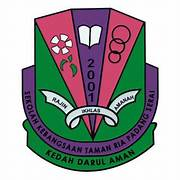
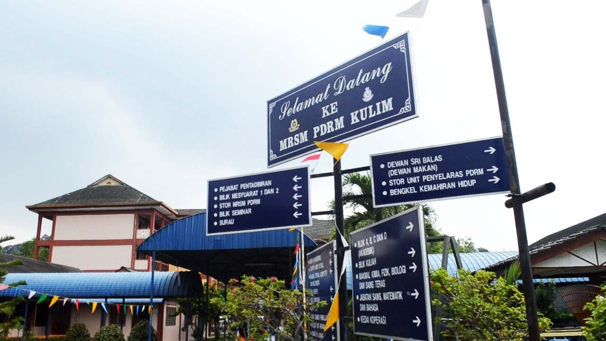
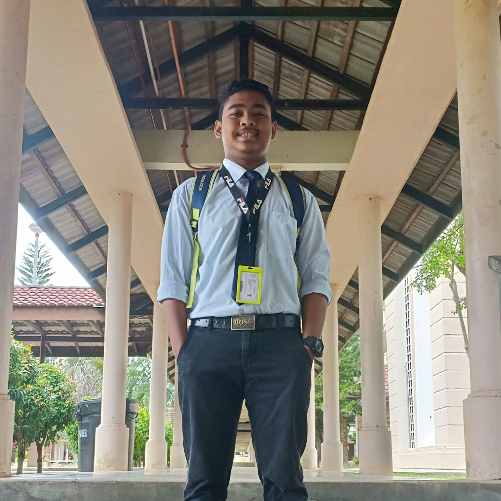
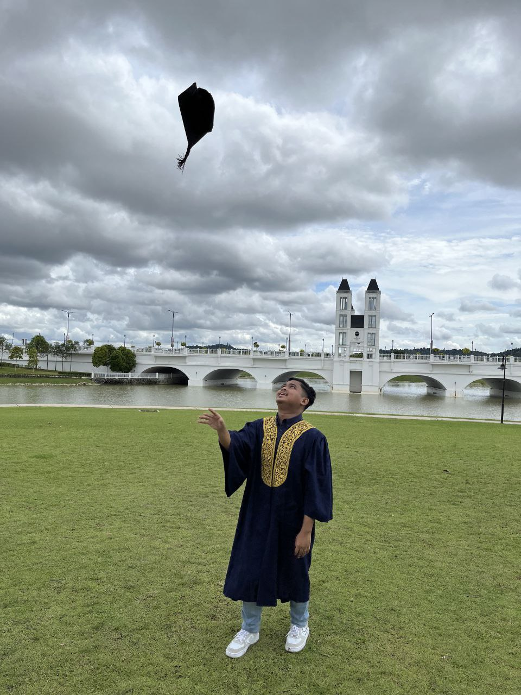

SCHOOL |
DECSRIPTIONS |
|  |
From 2007 until 2012 i went to Sekolah Kebangsaan Taman Ria, Padang Serai, Kedah. I was a prefect at that school from standard 2 until standard 6. I got 4A 1B in UPSR. |
|  |
Then, i continue my study at MRSM PDRM Kulim, Kedah from 2013 until 2017. At that school many achievements that i have received as an athlete such as i got to represents Kedah in rugby. |
|  |
After SPM, i continued my study at UITM KEDAH from 2018 until 2020. At UITM KEDAH i graduated in Diploma in Information Management . |
|  |
After SPM, i continued my study at UITM PUNCAK PERDANA from 2021 until 2024. At UITM PUNCAK PERDANA i graduated in Bachelor Degree in Records Management . |